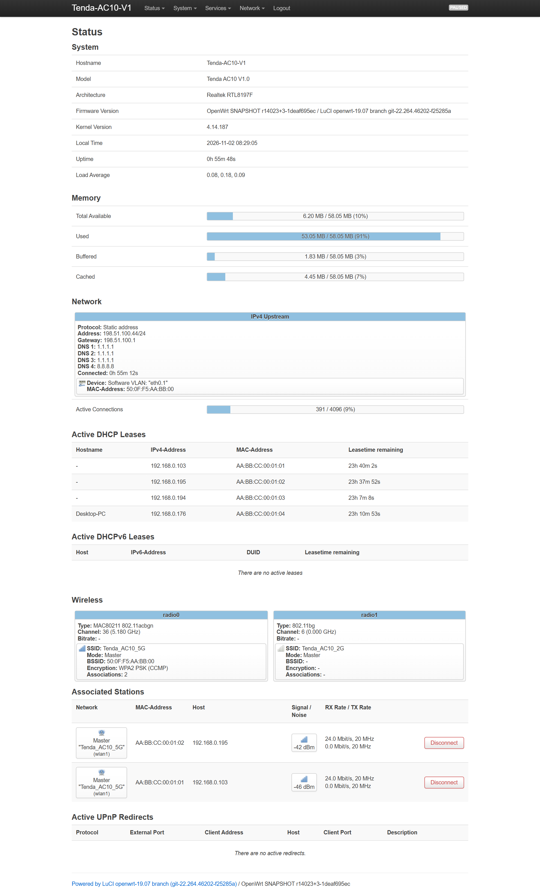
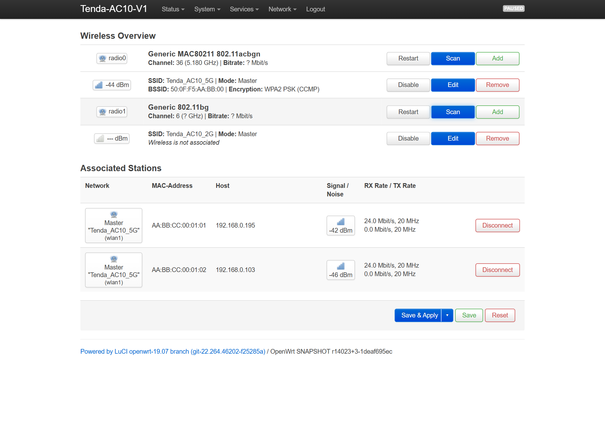
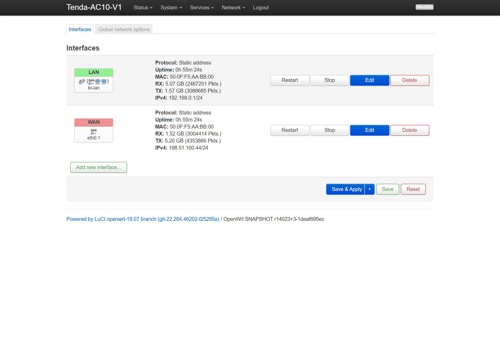
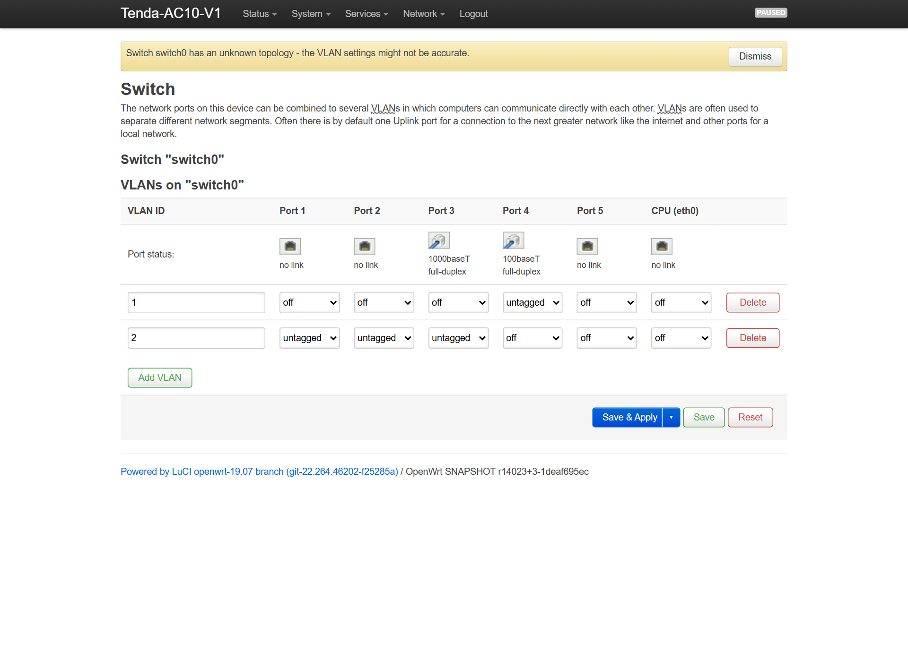
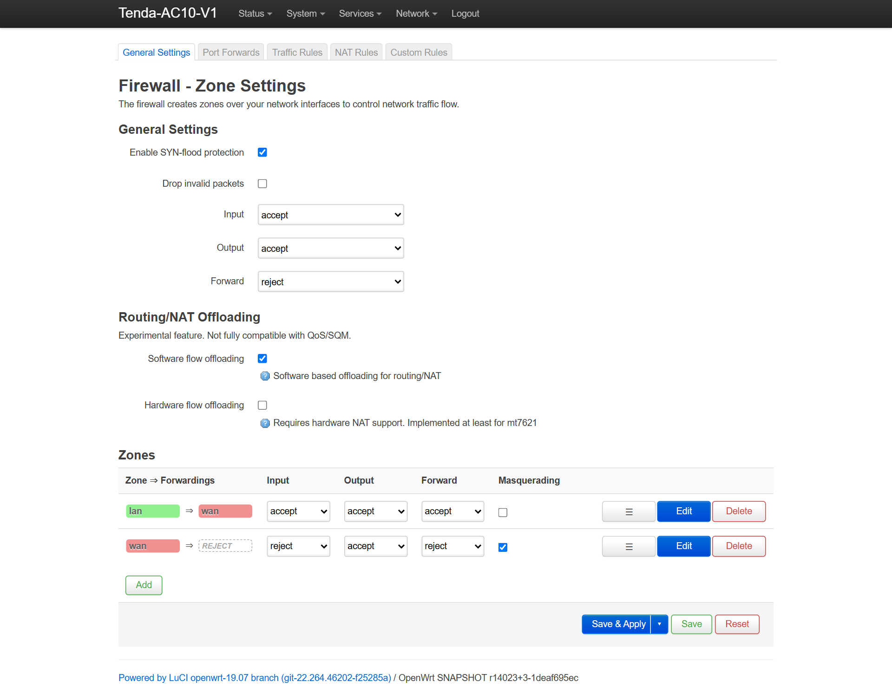

Ревизии V2.0 и V3.0 используют чип RTL8197FH под управлением eCos RTOS и имеют всего 2 МБ флеш-памяти (заводской образ 1.73 МБ). Попытка залить 5.54 МБ образ Linux уничтожит загрузчик eCos насмерть и потребует выпаивания чипа флеш-памяти!
Revisions V2.0 & V3.0 use RTL8197FH running eCos RTOS with only 2 MB flash (stock image 1.73 MB). Flashing a 5.54 MB Linux image permanently destroys the bootloader, requiring SPI desoldering!
В шапках форумов годами висел миф о 16 МБ Flash и 128 МБ RAM. Ниже приведены фактические данные аппаратного вскрытия и побайтовых дампов:
For years forum headers repeated the 16 MB / 128 MB myth. Below are the verified silicon facts from full flash dumps:
Снимки сняты напрямую с рабочего маршрутизатора Tenda AC10 V1.0 под прошивкой v4.14.187-r3-ac10-hybrid:
Captured directly from a production Tenda AC10 V1.0 router running release v4.14.187-r3-ac10-hybrid:





Все скрипты работают на 100% автономно, без интернета и без стороннего ПО:
All scripts run completely offline without internet or external third-party tools:
| СкриптScript | Что делаетFunction |
|---|---|
Flash_Hybrid_OpenWrt_4.14_TFTP.bat |
Прошивка OpenWrt в 1 клик по TFTP. Находит сетевой адаптер, ставит статику, заливает образ за 7с и в блоке finally возвращает DHCP.1-click TFTP flash for OpenWrt. Auto-detects NIC, sets static IP, uploads image in 7s, rolls back to DHCP in finally block. |
Configure_OpenWrt_ISP_WAN_and_WiFi.bat |
Автоперенос настроек провайдера за 10 секунд. Парсит стоковый RouterCfm.cfg, вытягивает клонированный MAC, статику и пароли Wi-Fi, настраивает OpenWrt по SSH.10-second ISP settings migration. Parses stock RouterCfm.cfg, extracts cloned MAC, WAN IP/DNS & Wi-Fi credentials, configures OpenWrt over local SSH. |
Offline_TFTP_Recovery_and_Flash.bat |
Откат на заводскую прошивку Tenda V15.03.06.23 за 2 минуты через аварийный режим TFTP загрузчика.Full rollback to clean factory Tenda V15.03.06.23 in 2 minutes via bootloader TFTP mode. |
Restore_Optimized_Config_and_WAN.bat |
Накатывает профиль Stock+ поверх заводской прошивки (гасит ucloud_v2 и паразитный br2).Applies Stock+ profile onto stock firmware (disables ucloud_v2 telemetry and phantom br2). |
Emergency_Restore_PC_Network_DHCP.bat |
Аварийная кнопка: за 3 секунды сбрасывает забытую статику 192.168.1.x на сетевой карте обратно в DHCP.Emergency button: resets forgotten static 192.168.1.x IP back to DHCP in 3 seconds. |
По адресу 0x80001010 сетевой фильтр загрузчика проверяет протокол IPv4: если протокол != 0x11 (UDP), пакет молча отбрасывается. В коде загрузчика нет обработчика ICMP! Шлите TFTP-пакеты на UDP-порт 69 без ожидания пинга.
At VA 0x80001010 the bootloader filters IPv4 protocol == 0x11 (UDP only). Zero ICMP handler code exists in ROM. Transmit TFTP packets to UDP port 69 without waiting for ping.
По адресам 0x8000ECE8..0x8000ED4C загрузчик вызывает rtk_port_phy_power_down(3). Патч-корд ПК должен быть подключен строго в порты LAN 1, LAN 2 или LAN 3.
At VA 0x8000ECE8..0x8000ED4C the booter calls rtk_port_phy_power_down(3). Connect PC Ethernet strictly to LAN 1, 2, or 3.
В функции AutoBurn загрузчика инструкция ветвления зануляет адрес записи для сегмента 2. Двухсегментные сборки затирают собственный загрузчик mtd0. Наш образ factory.bin собран односегментным контейнером cs6c (запись на 0x00030000) и никогда не повреждает загрузчик.
In AutoBurn, branching zeros the write address for segment 2, overwriting mtd0 bootloader on multi-segment images. Our factory.bin is strictly 1-segment cs6c (burn address 0x00030000), completely eliminating this hazard.
| # | УзелSubsystem | ПроблемаSymptom | Решение в релизе r3Solution in r3 Release |
|---|---|---|---|
| 1 | Wi-Fi 5G | Пустой OTP eFuse (0xFF) -> просадка -17 dB | Патч релокаций ELF под усилители Skyworth SE5003L1 RFE Type 6 (0x82C..0x83C) + XCAP из mtd1 |
| 2 | Wi-Fi 5G | Обрывы полосы 80 МГц (VHT80) каждые 2-11 с | Таймаут опроса RF 0x33 увеличен со 100 до 1000 циклов (2 мс), REG_L1WT, DESC_RATE6M |
| 3 | HWNAT | Блэкхол Wi-Fi при включенном аппаратном NAT | Внедрение SWTCR0 |= 0x400C (WANRouteMode=ToCpu) в gw_prog + dir842-l2flush (940 Мбит/с провод + Wi-Fi) |
| 4 | Wi-Fi 2.4G | Малый радиус действия без усилителя | set-mib.sh считывает таблицы CCK, HT40, ther, xcap, trswitch для Skyworks SKY85303-11 из mtd1 |
| 5 | Switch L2 | Fabric Wedge (зависание свитча) при нагрузке 2000 МБ | Асимметричный Flow Control trunk_pause=3, буферы SBFCR1 (FCOFF=320, FCON=380), мягкий сторож Stage 1 |
| 6 | JFFS2 | Сброс настроек после первой перезагрузки | 80_mount_root автоочищает остатки стокового SquashFS XZ в mtd5 и создает чистый JFFS2 |
| 7 | GPIO | Ложный Failsafe на плавающем пине GPIO 6 (WPS) | pi_preinit_no_failsafe="y" в 00_preinit.conf |
| 8 | iOS Apple | Плашка "Сеть блокирует защищенный трафик DNS" | Удален ula_prefix, ra/dhcpv6 отключены, выдача DHCP Option 6 (1.1.1.1,8.8.8.8,192.168.0.1) RFC 9462 DoH |
| 9 | Booter | Ошибка Format error в стоковом меню Tenda | webupgrade.bin содержит 64-байтный trx2 заголовок (ih_magic=0x27051956, ih_ver=0x00030028) |
Все файлы проверены и подписаны. Нажмите кнопку справа от хеша для копирования:
All files verified and attested. Click Copy button to copy SHA-256 hash to clipboard:
| ФайлFile | Размер (Б)Size (Bytes) | SHA-256 |
|---|---|---|
tenda-ac10-v1-hybrid-openwrt-4.14-webupgrade.bin |
5 542 598 | 8f77ff1b8eaf4b0cbc06db8c377ed3a22235ae1db45f65f0fef592f627e5af22 |
tenda-ac10-v1-hybrid-openwrt-4.14-factory.bin |
5 542 534 | 7bd99d144fb90fade7f7ecace0d2ebc2de7e34afb627231cc9305bd3ccceabc7 |
tenda-ac10-v1-hybrid-openwrt-4.14-sysupgrade.bin |
5 542 534 | 7bd99d144fb90fade7f7ecace0d2ebc2de7e34afb627231cc9305bd3ccceabc7 |
Tenda_AC10_V1_Stock_TFTP_Recovery.bin |
7 588 884 | a7d4d27f7b1d52526e24348a6a21c5a56740d41b357b17c9e3bc4d8db9f9b0fa |
Tenda_AC10_V1_Offline_Autonomous_Toolkit.zip |
72 336 | d3240d5adbf7f0b498cac3c33cc463a4f214ccfc57948f439fdc0b282ba10b42 |
Tenda_AC10_V1_Build_and_Router_Scripts.zip |
39 247 | 171574fa8c9f4960b03cc0191cb6660f677cff9d93faca44fb819cfbcdbbeda2 |